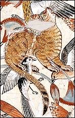

Cat
Cat

The ancient Egyptians often used cats as hunting companions. Some experts believe that the ancient Egyptians trained their cats to catch birds and bring them back to their masters.
The eye of the cat in this painting was made from a small piece of gold leaf.
Back...